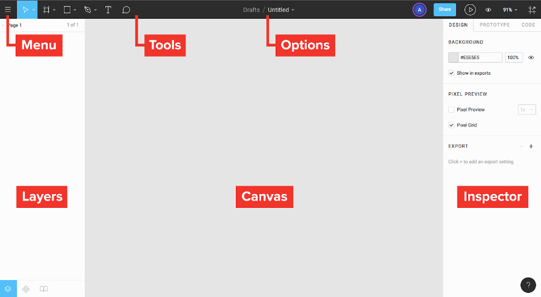
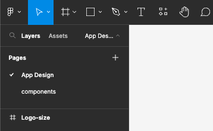
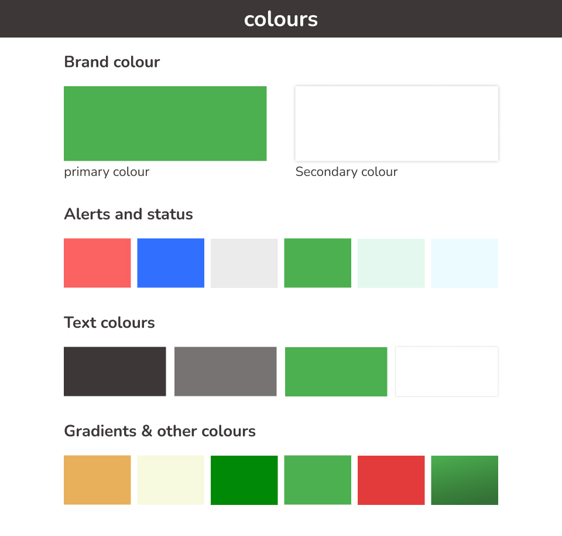
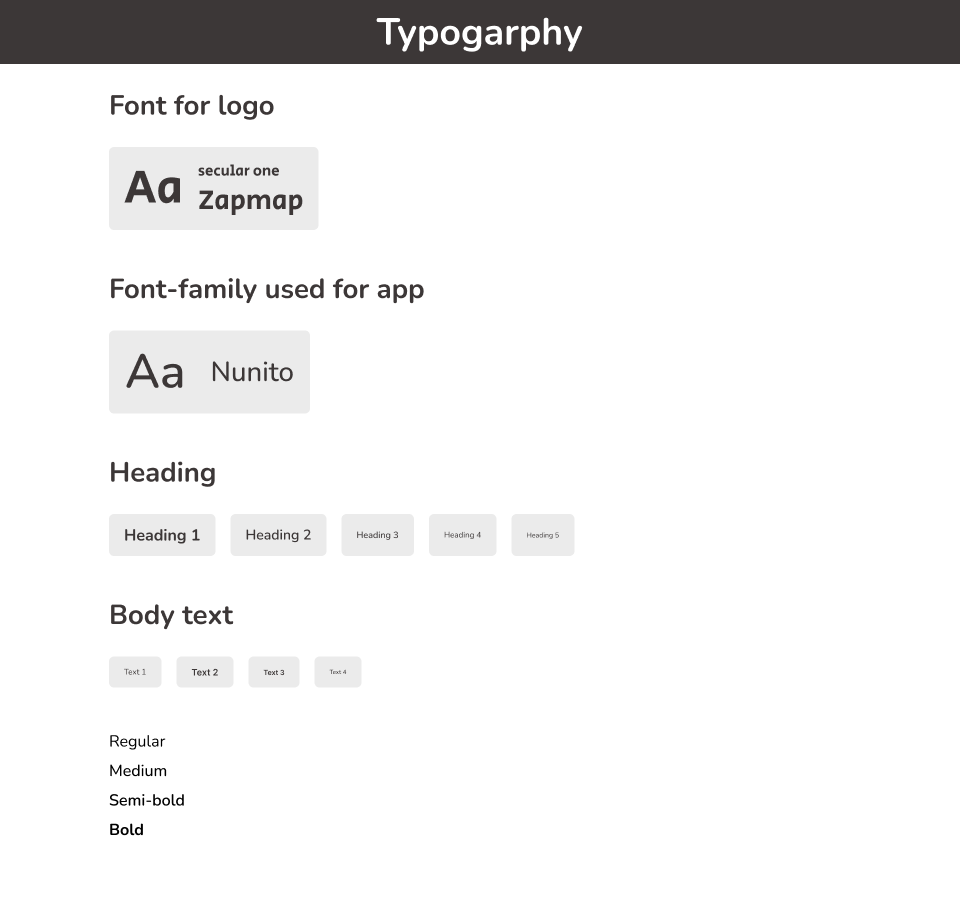
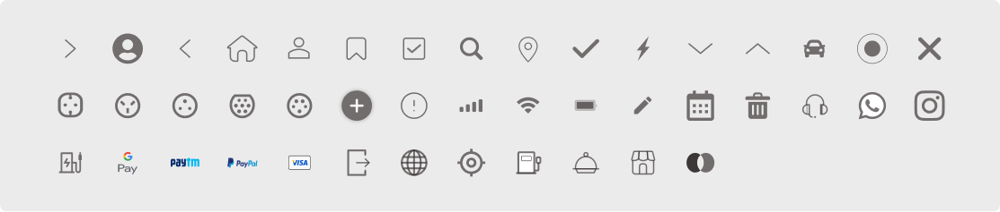
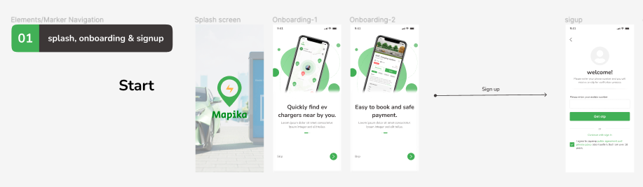
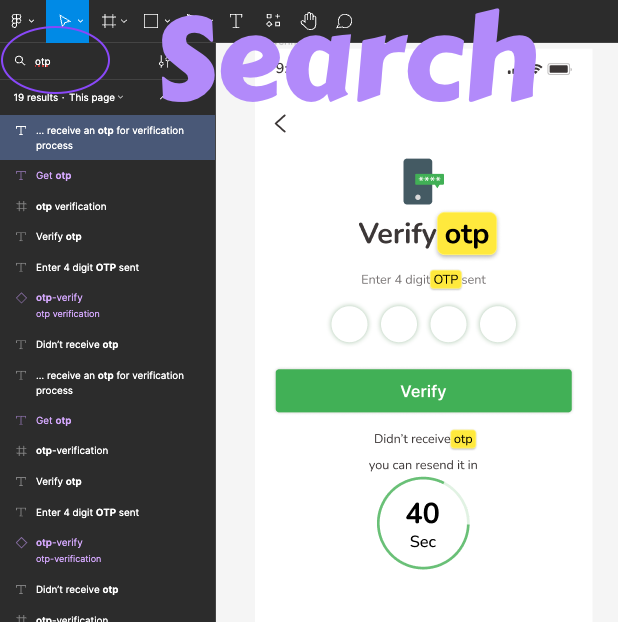
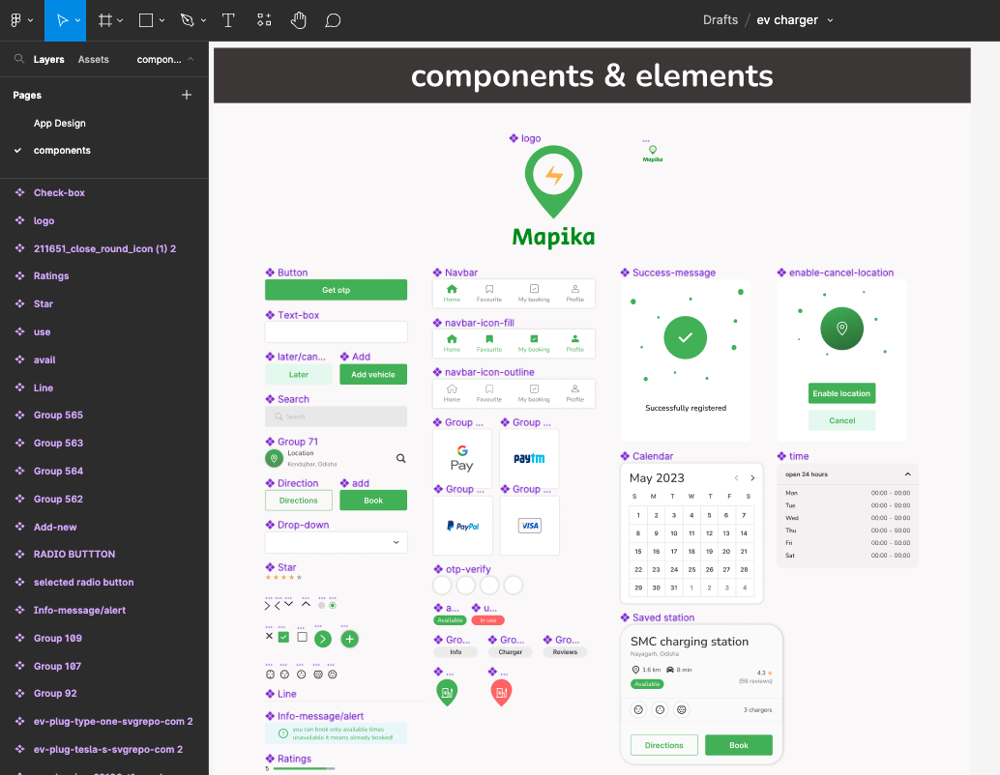

The Mapika UI Kit has been thoughtfully organized to facilitate easy navigation and streamline your design workflow. Whether you're a seasoned designer or just starting, getting familiar with the kit's structure will help you make the most of its features. Here's a guide on how to navigate the UI Kit effectively:
Figma Screen

Pages:
Upon opening the UI Kit, you'll find two pages. This serves as the hub from which you can access all the kit's components and App Design. 
App Design:
The kit includes a comprehensive set of screens designed for various purposes. These screens are organized into categories for easy access.
To explore a specific screen, click on its corresponding category in the dashboard, and you'll be directed to the artboard where you can view and edit that screen's design.
Typography and Colors:
Typography and color play a pivotal role in design consistency. The kit provides details on the fonts and color schemes used.
In the "Typography" section, you'll find information about the fonts employed in the kit, including font families and styles.
The "Colors" section showcases the primary and secondary color palettes, complete with hex codes, making it effortless to maintain design coherence.
Colors 
Typography 
Icons:
Icons and illustrations are essential for visual storytelling and enhancing your designs. The kit includes a collection of icons and illustrations that can be easily integrated into your screens.
Visit the "Icons" and "Illustrations" sections to explore the available assets. You can copy and paste them directly into your design. 
Guidelines (Follow the Marker):
To ensure you make the most of the UI Kit, detailed documentation is included. This documentation offers insights into design principles, best practices, and usage guidelines with shown marker.
It's recommended to review the documentation before diving into your project to gain a comprehensive understanding of how to leverage the kit effectively.
Follow the Marker
Once you started following marker, Now you should follow the lines to see the progress and navigation of all screens. 
Search Functionality:
The UI Kit dashboard may include a search functionality. This allows you to quickly locate specific elements, screens, or resources by entering keywords or tags 
Collaboration and Sharing:
Figma, the platform on which this UI Kit is built, supports real-time collaboration. You can invite team members to collaborate on your design project directly within Figma.
Additionally, you can share your designs with stakeholders by generating shareable links or exporting design assets.
Components and Symbols:
Mapika UI Kit is designed with reusability in mind. Components and symbols are available to maintain consistency and save you time.
Navigate to the "Components" section to access UI elements like buttons, forms, navigation bars, and more. Simply drag and drop these components onto your design canvas.
Symbols represent reusable design elements that you can customize globally. For example, you can change the color scheme or typography across your entire project by updating the corresponding symbols.

By understanding the structure and features of the Mapika UI Kit, you'll be well-equipped to create stunning and user-friendly designs for your mobile app. Whether you're designing an electric vehicle (EV) locator or any other application, this kit empowers you to bring your creative ideas to life efficiently and effectively.